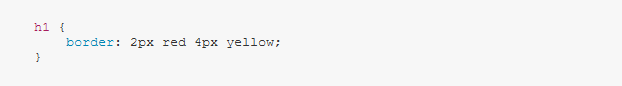

Mise en page: Posons le cadre. je suis caché !
Il y a cependant une différence notable, dès l'origine, entre un traitement de texte classique et un moteur de rendu HTML : c'est la notion de page. Quelle est la différence ? Quelles en sont les conséquences ? mais non !
-
Le traitement de texte dit que les pages sont simplement un endroit pour stocker les boites.
Le moteur de recherche dit que les pages sont des boites qui superposent des autres boites.
Si j'écris la règle CSS suivante : on peut me voir !
-
Le titre h1 n'aura pas de bordure car il manque le type de bordure (solid, medium, dotted...) et par défaut le type de border vaut
none.
Il n'y aura donc rien qui s'affichera à l'écran.
Quels avantages y a-t-il à utiliser une taille absolue ? Une taille relative ? Ca sert vraiment a quelque chose de me regarder ?
-
Unités de longueur absolue
La plupart de ces unités sont utiles pour l'impression plutôt que pour l'affichage sur un écran. Ainsi, on n'utilise généralement pas
Unités de longueur relativecm(centimètres) sur un écran.Les unités de longueur relative permettent d'exprimer des quantités relatives à quelque chose d'autre comme la taille de la police de l'élément parent ou la taille de la zone d'affichage (viewport). L'avantage d'utiliser des unités relatives est qu'avec un peu d'organisation, on peut faire que la taille du texte ou d'autres éléments se mette à l'échelle, relativement à quelque chose d'autre sur la page. La plupart des unités les plus utiles pour le développement web sont présentes dans le tableau qui suit.
À quoi correspond l'unité em ? Et la nouvelle unité rem ? Je crois que je perds du temps
-
L'unité
emsignifie « la taille de police de l'élément parent » pour ce qui concerne la typographie. Les éléments<li>à l'intérieur de<ul>et qui ont un attributclassavecemsprendront donc leur taille en fonction de celle de leur parent. Aussi, chaque niveau plus grand que le précédent, car chacun a une taille de police de1.3emsoit 1,3 fois plus grand que la taille de police pour l'élément parent.L'unité
remsignifie « la taille de police de l'élément racine » (rem est l'acronyme anglais de « root em » qu'on pourrait traduire par « em racine ».) Les éléments<li>à l'intérieur de<ul>et qui ont un attributclassavecremsprendront leur taille à partir de l'élément racine (<html>). Cela signifie que les niveaux successifs ne gagneront pas en largeur.
Expliquez le principe des nouvelles unités vh et vw et leur intérêt. C'est long vous trouvez pas ?
-
En CSS, on peut également utiliser des unités proportionnelles aux dimensions de la zone d'affichage. Un
vhcorrespond à 1% de la hauteur de la zone d'affichage pour la disposition etvwmesurera, de façon analogue, 1% de la largeur de la zone d'affichage pour la disposition.
Pourquoi DIV #1 est-il devant DIV #4, alors que son z-index est plus faible ? On y est presque !
-
DIV #1est devant DIV #4 car DIV #4 est un fils de DIV #3.
DIV #1 possède une position plus haute dans l'arborescence des DIV, il va donc être mis en avant, car DIV #3 a pour z-index 4 (et DIV #1 a pour z-index 5)
Dans l'exemple précédent, que se passe-t-il si l'on supprime la bordure de main (en pointillés) ? Pourquoi ? Enfin, félicitation, on a rien gagné !
-
Si on enlève la bordure du
mainla marge de l'element DIV #A et DIV #B, disparait parce qu'elle est absorbée par son parent qui a une marge de 0.